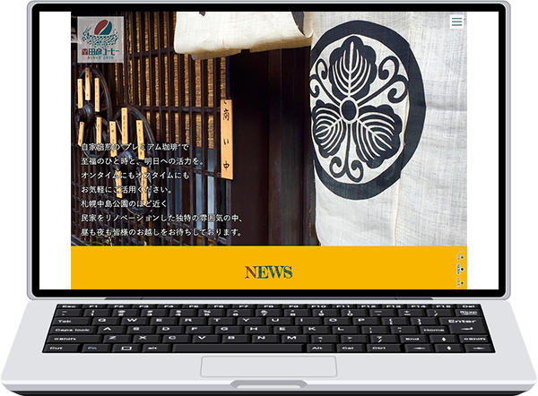
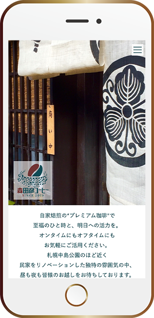

森田彦コーヒー（架空）
既存のコンセプトを元に制作
デザイン、
レスポンシブを含めたコーディング、
動きを付けるjQueryの実装
- / 30〜40代の男女がターゲット
- / 店として古くはないが落ち着く系のCAFEで、昔ながらの喫茶店のような雰囲気もある店。
- / 高級店ではないがこだわりをもって商品を提供している
- / ノスタルジックでもあり新しくもある憩いを堪能できるカフェ
使用ツール
HTML / CSS / Javascript(jQuery) / Photoshop